The Sun of Apeiron- Novacorp's slogan
The Nova Corporation (or Novacorp for short) is not as influent as its counterparts, but it definitely is one of the most sprawling companies of Apeiron; as the eperopolis' sole producer and provider of electricity, it is literally necessary to sign a contract with them in order to have a decent lifestyle.
History
The Nova Corporation came to be rather recently compared to the Federation's other mega-corporations. When Neo-Caryonite's four main cities officially merged into Apeiron, the island's different dedicated institutions merged into a single company, to simplify management of the Federation's power grid via a single centralized institution. The company's central HQ was set in Infinium City, but it would be decided that this would only be temporary.
In the early third century PC, as a response to the constant influx of new people coming to live in Apeiron, the corporation signed a contract with a few companies around the Federation for the construction of a massive fusion reactor to help the island's power grid supply energy to all the freshly-arrived inhabitants. The task was a giant's ordeal, as the dimensions that were requested were rather imposing, but all the theory was already known in advance, so a mere twenty years were enough to complete the construction. In the following years, a small campus and science district would be built around the power plant; the area eventually became known as the Supernova, and the Nova Corporation moved their headquarters there.
Activities
The activities of the Nova Corporation are rather simple, as they are almost exclusively limited to production and distribution of electricity, along with the corresponding R&D sector; although electricity is so important to Apeiron's civilization, that the corporation has about just as much influence as Mensana Inc. in its own domains. They own legions of power plants all across the island; among the most commonly exploited energies can be found nuclear fission (29%), hydroelectric (26%), nuclear fusion (21%, almost exclusively thanks to the Supernova), and solar (12%).
Their most famous creation is the Supernova, a large science complex and campus located roughly at the center of Apeiron's mainland. It is home to many universities of science, laboratories and research centers, but most importantly a colossal nuclear fusion reactor, functioning almost 23 hours a day and providing enough energy to fully sustain the entirety of Volnexar without additional power sources.
